Caractérisation des graphes planaires
Preuve d'un théorème de Jordan simplifié
TBD suffisant pour les graphes où les sommets sont dénombrables. TBD si courbe alors polygone alors droites TBD Diesel théorème 4.1.1 (p83 et suivantes) TBD https://minerve.ens-rennes.fr/images/Le_Théorème_de_Jordan_S.Quayle_V.Le_Gruiec..pdf TBD - topologie et courbe fermée Jordan : https://pagesperso.g-scop.grenoble-inp.fr/~lazarusf/Enseignement/graphesPlans.pdf
Mineurs
La caractérisation des graphes planaire se fait par "mineur exclu". C'est à dire caractériser les graphes qui vont nous empêcher de réussir un dessin planaire
Définition
Soit $G$ un graphe. Un graphe $H$ est un mineur de $G$ s'il peut être obtenu par un nombre quelconque des opérations suivantes :
- suppression d'un sommet sans voisin
- suppression d'une arête
- contraction d'un arête: on fusionne l'arête en un nouveau sommet $z$ dont les voisins sont les voisins des anciens sommets formant l'arête
En deux mots, les mineurs sont les graphes cachés dans un graphe plus gros :
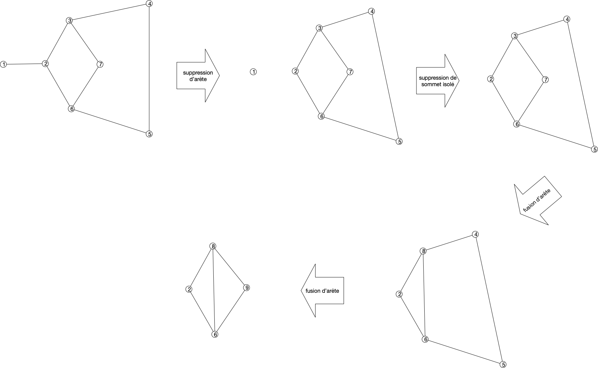
La notion de mineur rend compte de l'intrication locale de chemins entre sommets. Ils ont donné lieu à un des plus joli théorème de théorie des graphes (et pourtant il y en a !), le théorème de Roberston-Seymour. Ce théorème indique en effet que :
- toute famille close par mineur peut être caractérisée par un nombre fini de mineurs exclu,
- Quelque soit le graphe $M$, il existe un algorithme en $\mathcal{O}(n^2)$ pour savoir si un graphe $G$ admet $M$ comme mineur.
En revanche, le théorème ne caractérise pas les algorithmes et ils ont une constante multiplicatives exponentielle en la taille du mineur à rechercher. Il n'est donc pas utilisé en pratique, mais la planarité fait partie de ces familles puisque :
Proposition
Si est $G$ un graphe planaire alors tous ses mineurs le sont aussi.
preuve
preuve
Les trois opérations pour créer un mineur d'un graphe fonctionnent aussi sur son dessin :
- la suppression d'un sommet ou d'une arête ok
- la contraction d'un arête se fait en concaténant les courbes des arêtes supprimées, comme sur le dessin ci dessous.
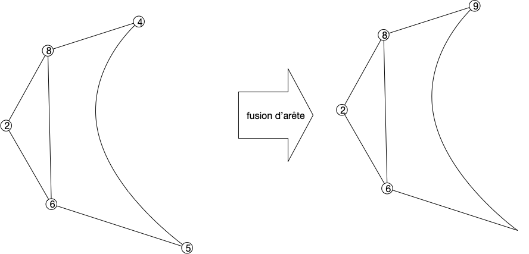
On a déjà établi la proposition suivante :
Proposition
Si $G$ est planaire, il ne peut avoir ni $K_5$ ni $K_{3,3}$ comme mineur
preuve
preuve
Clair puisque l'on a montré que :
- ni $K_5$ ni $K_{3,3}$ ne peuvent être planaire,
- un graphe n'est planaire que si ses mineurs le sont.
Il nous reste à faire la réciproque. Initialement faire par Kuratowski en 1930 dans le cadre des subdivisions de graphes, il a été ré-ecrit par Wagner en 1937 avec les mineurs.
Voir la page Wikipedia
La caractérisation des graphes planaire est tres liée à la notion de 2-connexité. On va donc commencer par définir ce que c'est et démontrer des propriétés qui vont se révéler utiles en général et pour notre caractérisation en particulier.
2-connexité
Définition
Un graphe est dit $k$-connexe si la suppression d'un ensemble quelconque de $k-1$ de ses sommets ne déconnecte pas $G$.
On appelle connectivité de $G$ et la note $\kappa(G)$, le plus grand $k$ tel que $G$ soit $k$-connexe.
Par exemple :
- un chemin est 1-connexe, si on supprime un sommet qui n'est pas une de ses extrémités on le déconnecte,
- un cycle est 2-connexe puisque supprimer un de ses sommets le transforme en chemin.
La $k$-connexité est bien une généralisation directe de la connexité puisqu'un graphe est connexe si et seulement si il est $1$-connexe.
Montrez que le degré d'un sommet d'un graphe $k$-connexe est forcément supérieur au égal à $k$
corrigé
corrigé
S'il existait un sommet avec un degré strictement plus petit que $k$, supprimer tous ses voisin le déconnecterait du reste du graphe ce qui est impossible pour un graphe $k$-connexe.
Nous aurons uniquement besoin ici de la 2-connexité et de cette propriété en particulier :
Proposition
Soit $G$ un graphe 2-connexe de strictement plus de 2 sommets. Quels que soient $u \neq v$ deux de ses sommets, il existe un cycle élémentaire dans $G$ passant par $u$ et $v$.
preuve
preuve
Le graphe étant connexe, il existe un chemin élémentaire entre $u$ et $v$. Notons le $u = x_1\dots x_p = v$.
Soit $x_i$ le plus grand $i\geq 1$ tel qu'il existe un cycle élémentaire contenant $x_1\dots x_i$. On a $1 < i \leq p$ car le graphe est 2-connexe, il existe donc un chemin $u = y_1\dots y_q = v$ entre $u$ et $v$ dans le graphe privé de $x_1$. En notant $y_j$ le premier élément de ce chemin qui soit dans l'ensemble $\{x_2, \dots x_p\}$ (comme $y_q = v$, $y_j$ existe), disons $y_j = x_k$, on a un cycle élémentaire $x_1\dots x_k y_{j-1} \dots y_1$.
Si $i=p$ on a gagné, donc on peut supposer sans perte de généralité que $1< i < p$. Notez que ce cycle ne peut contenir de sommets du chemin $x_{i+1}\dots x_p$
En supprimant $x_i$ du graphe, il reste connexe et donc il existe un chemin entre $u$ et $v$. Dans ce chemin considérons le plus grand élément, disons $w$, qui fait parti du cycle et $x_j$ le premier élément après $w$ qui fait parti du chemin $x_{i+1}\dots x_p$. Comme $v=x_p$, $w$ et $x_j$ existent. Or la portion de chemin entre $w$ et $x_j$ ne contient aucun élément ni du cycle ni du chemin $x_{i+1}\dots x_p$. On peut donc construire un cycle élémentaire entre $u$ et $x_j$ en allant de $u$ à $w$ puis de de $w$ à $x_j$ et en revenant à $u$ par $x_i$ et l'autre bout du cycle :
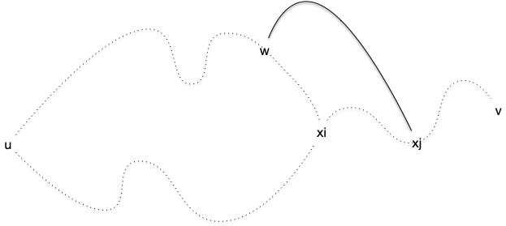
Comme $j>i$ on a une contradiction.
Tout comme un graphe peut se décomposer en composantes connexes, on peut le décomposer en ses composantes 2-connexes
Définition
Un ensemble de sommet d'un graphe est 2-connexe si la restriction du graphe à cet ensemble est 2-connexe.
Définition
Un ensemble de sommets d'un graphe est une composante 2-connexe si :
- il est 2-connexe,
- il est maximal pour l'inclusion
Proposition
Si $A$ et $B$ sont deux composantes 2-connexes d'un graphe connexe $G$, on a soit :
- $A \cap B = \emptyset$ et il existe au plus un unique couple $(x, y) \in A \times B$ tel que $xy \in E(G)$
- $\vert A \cap B \vert = 1$ et $xy \notin E(G)$ quelque soient $x \in A \backslash B$ et $y \in B \backslash A$
preuve
preuve
Comme $A$ et $B$ sont maximaux on peut supposer sans perte de généralité que $A \subsetneq A \cup B$. De là, si $\vert A \cap B \vert > 1$ alors $A \cup B$ serait connexe et supprimer n'importe quel élément de $A \cup B$ ne déconnecterait le graphe : $A$ n'est pas maximal ce qui est impossible.
Le même raisonnement s'applique ($A\cup B$ serait 2-connexe) :
- si $A \cap B = \emptyset$ et qu'il existait $x_1 \neq x_2$ tous deux dans $A$ avec chacun une arête vers un élément (pouvant être le même) de $B$
- si $\vert A \cap B \vert = 1$ et qu'il existait $x \in A \backslash B$ et $y \in B \backslash A$ avec $xy \in E(G)$.
Corollaire
Pour toute arête $xy$ d'un graphe il existe une unique composante 2-connexe contenant à la fois $x$ et $y$.
preuve
preuve
Comme $\{x, y\}$ est 2-connexe si $xy \in E(G)$, il fait partie d'une composante 2-connexe et la proposition précédente permet de conclure.
Définition
On appelle nœud d'articulation d'un graphe les sommets à l'intersection de deux composantes 2-connexes.
Proposition
Soit $G$ un graphe connexe et $\mathcal{C}$ l'ensemble de ses composantes 2-connexes.
Le graphe $G' = (\mathcal{C}, E)$ tel que $xy$ est une arête si $x\cap y \neq \emptyset$ est un arbre.
preuve
preuve
Tout d'abord le graphe $G'$ est connexe. En effet si $A$ et $B$ sont deux composantes 2-connexe et $x \in A$, $y \in B$ alors il existe un chemin entre $x$ et $y$ dans $G$ et chaque arête est dans une composante connexe. cette succession de composantes connexe forme un chemin dans $G'$.
De plus ce graphe est sans cycle car sinon le cycle dans $G'$ induirait un cycle dans $G$ dont les arêtes appartiendraient aux composantes 2-connexes du cycle de $G'$. Mais un cycle fait partie d'une unique composante 2-connexe ce qui est une contradiction puisque celle-ci aurait au moins 2 sommets en commun avec tous les éléments du cycle.
Trouver les composantes 2-connexes d'un graphe peut se faire linéairement en utilisant un DFS astucieux. C'est l'algorithme de Hopcroft et Tarjan (1973).
fonction DFS(u: Sommet, t: entier, G: Graphe,
pos: *[]Sommet, pred: *[]Sommet, low: *[]Sommet, P: *Pile<(Sommet, Sommet)>) → [:]{Sommet}:
pos[u] ← t
low[u] ← t
pour chaque voisin v de G[u]:
si pos[v] == -1: # première fois que l'on voit v : uv est dans l'arbre
pred[v] ← u
P.empile((u, v))
l ← DFS(v, t+1, G, &pos, &pred, &low, &P)
low[u] ← min(low[u], low[v]) # mise à jour (1)
si low[v] ≥ pos[u]: # on a trouvé une composante 2-connexe
var s {Sommet} ← {}
ajoute u et v à s
(x, y) ← P.dépile()
tant que (x, y) ≠ (u, v):
ajoute x et y à s
(x, y) ← P.dépile()
ajoute s à la fin de l
sinon si v ≠ pred[u]: # uv est un arc retour
P.empile((u, v))
low[u] ← min(low[u], pos[v]) # mise à jour (2)
rendre l
algorithme 2_connexe(G: Graphe, r: Sommet):
var pos []Sommet ← [-1 pour _ de [1 .. n]]
var pred []Sommet ← [-1 pour _ de [1 .. n]]
var low []Sommet ← [-1 pour _ de [1 .. n]]
var P Pile<(Sommet, Sommet)> ← Pile<(Sommet, Sommet)>{}
pred[r] ← r
rendre DFS(r, 0, G, &pos, &pred, &low, &Pile)
Tout d'abord, il est clair que :
- le parcours est un DFS dont l'arbre associé est planté en $r$ et constitué des arêtes $\{ \{x, pred[x]\} \mid x \neq r\}$,
- la complexité totale de l'algorithme est en $\mathcal{O}(v(G) + e(G))$,
- toute arête du graphe est soit une arête de l'arbre soit une arête $xy$ avec $y$ sur le chemin entre $x$ et $r$ (on les appelle des arêtes retours)
pos[x]est la distance entre $x$ et $r$ sur l'arbre du DFS
Commençons par caractériser les valeurs du tableau low :
Proposition
Pour tout sommet $s$, low[s] correspond à la plus petite valeur pos[x] pour toute arête retour $xy$ avec :
- $x$ sur le chemin entre $s$ et $r$,
- $y$ dans le sous-arbre planté en $s$
preuve
preuve
pour tout $u$ on modifie low[u] soit :
- en (2) lors de l'étude d'un arc retour partant de $u$
- en (1) après avoir examiné un de ses voisins pour la première fois.
On peut alors faire une récurrence partant des feuilles de l'arbres. Elles ne possèdent que des arêtes retour et donc low[u] correspond au plus petit élément atteignable sur le chemin. Puis cette valeur est mise à jour après avoir examiné tout le sous arbre planté en $v$ qui est contenu dans le sous-arbre planté en $u$.
La proposition précédente montre que le chemin allant de $x$ à l'élément $y$ sur le chemin allant de $x$ à $r$ tel que pos[y] = low[x] est dans la même composante 2-connexe puisqu'il existe un cycle élémentaire les reliant :
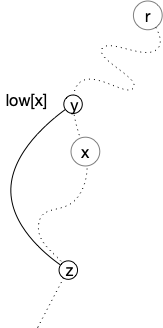
Utilisons cette propriété pour caractériser les composantes 2-connexes vis à vis d'un arbre DFS :
Proposition
Les composantes 2-connexes de $G$ sont des sous-arbres partiels de l'arbre de DFS
preuve
preuve
Toute arête de $G$ est dans une unique composante 2-connexe. Cette arête est soit une arête de l'arbre DFS soit un arc retour et dans ce cas il forme un cycle avec le chemin allant d'une extrémité à l'autre dans le chemin. Dans les 2 cas, ceci prouve que tout le chemin allant d'une extrémité à l'autre de l'arête est dans la composante 2-connexe contenant l'arête.
Si $x$ et $y$ sont dans une composante 2-connexe $C$, il existe un chemin $x = z_1 \dots z_k = y$ avec $z_i \in C$. Ce qui précède montre que le chemin allant de $z_i$ à $z_{i+1}$ dans l'arbre est également dans $C$ pour tout $i$ donc le chemin entre $x$ et $y$ également.
Comme il n'y a qu'au plus seul sommet commun entre deux composantes 2-connexes, les composantes 2-connexes reliées à $x$ comme nœud d'articulation vont s'organiser comme dans la figure suivante dans l'arbre de DFS :
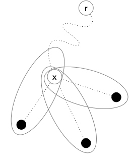
Mais pour que deux sommets qu ne sont pas sur le même chemin jusqu'à la racine puissent être dans une même composante connexe, il faut qu'ils soient liée par au dessus de leur jonction, par exemple comme une de ces façons :
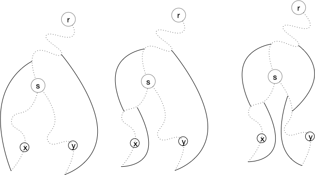
Il y en a d'autres, mais pour toutes on a low[s] < pos[s]. Ces éléments ne peuvent donc faire partie que d'une composante 2-connexe planté strictement plus haut que $s$. Pour un nœud d'articulation $x$ on peut affiner la représentation :
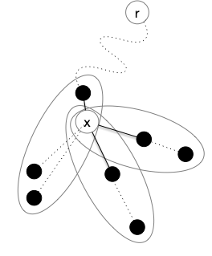
Seule la partie 2-connexe planté plus haut que $x$ peut être sur plusieurs branches, toutes les autres sont liées à $x$ par une seule arête. On a alors la proposition suivante qui fait fonctionner le tout :
Conséquence
Les composantes 2-connexes de $G$ sont des sous-arbres partiels de l'arbre de DFS. Si #u$ est la racine d'un tel sous-arbre , alors seule un de ses successeur y est également.
La conséquence précédente nous montre que l'algorithme fonctionne, si low[v] ≥ pos[u] :
- $u$ est la racine d'une composante 2-connexe
- seul le successeur $v$ y est également
De là toutes les autres arêtes ajoutées et non encore supprimées après l'empilage de $(u, v)$ sont exactement toutes les arêtes de la composante 2-connexe.
En prenant l'exemple suivant :
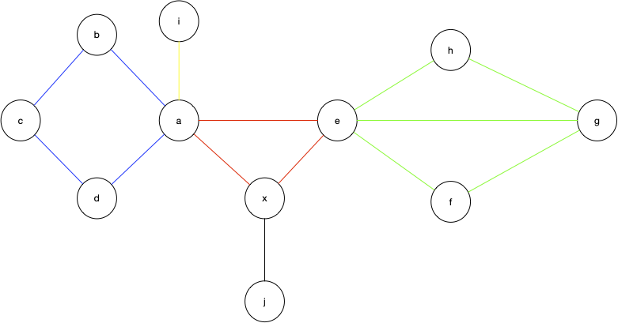
On obtient l'arbre suivant (l'ordre de passage va de gauche à droite) :
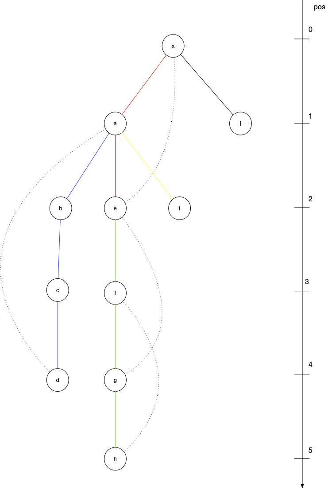
L'algorithme est donc à la fois très rapide (il est linéaire en la taille du graphe) et montre des propriétés insoupçonnée du DFS.
Définition
Soit $G$ un graphe. Un chemin $P$ est une oreille de $G$ si :
- seules ses extrémités font partie de $G$,
- aucune arête de $P$ n'est dans $G$.
En prenant l'exemple suivant :
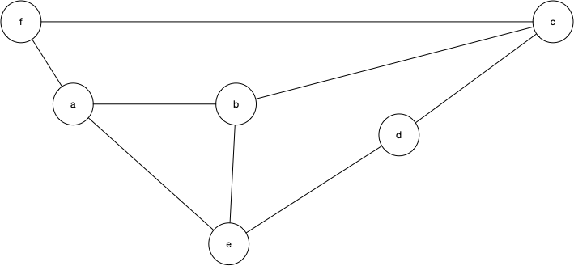
- le chemin $afcb$ est une oreille du graphe restreint à $\{a, b, e\}$,
- le chemin $be$ est une oreille du graphe restreint au cycle $\{a, b, c, d, e\}$,
- le chemin $be$ n'est pas une oreille du graphe restreint à $\{a, b, c, d, e\}$.
Proposition (Whitney, 1932)
Un graphe est 2-connexe si et seulement si il est décomposable en oreilles, c'est à dire que $G = (V(C) \cup_i V(P_i), E(C) \cup_i E(P_i))$ avec:
- $C$ un cycle élémentaire,
- $P_i$ est une oreille de $G_i = (V(C) \cup_{j <i} V(P_j), E(C) \cup_{j <i} E(P_j))$
preuve
preuve
Soit $H$ un sous-graphe 2-connexe avec plus de 2 sommets d'un graphe 2-connexe $G$. On a deux cas :
- soit il existe une arête $xy$ de $G$ qui n'est pas dans $H$ mais dont les sommets y sont.
- soit il existe un $x$ sommet de $G$ qui n'est pas dans $H$.
Dans le second cas, comme $G$ est 2-connexe il existe un cycle élémentaire dans $G$ reliant $x$ à un sommet de $G$. De là, on a à nouveau 2 cas :
- soit on peut en extraire une oreille en prenant les 2 premiers sommet de $H$ à gauche et à droite de $x$ dans le cycle :
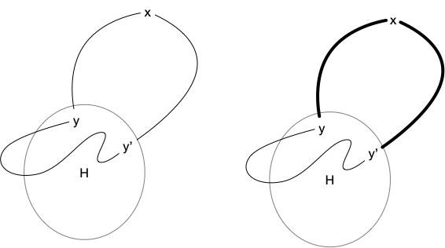
- soit tout les sommets du cycle sauf un, disons $y$ n'est pas dans $H$. Mais comme le graphe $G$ est 2-connexe et que $H$ a plus de 2 sommets, il existe un chemin entre $x$ et $y \neq y' \in V(H)$ que l'on peut rabouter en une oreille en allant à rebours de $y'$ au premier élément du cycle :
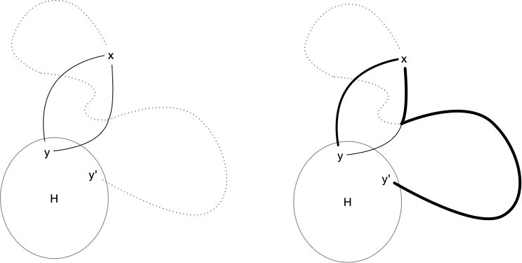
Le graphe $H$ auquel on ajoute ce chemin étant toujours 2-connexe, on peut continuer à ajouter des oreilles jusqu'à obtenir $G$.
On conclut la preuve en remarquant que comme le graphe $G$ est 2-connexe, il existe un cycle $C$ dans celui-ci ce qui nous permet de commencer.
Par exemple la figure ci-dessous montre une décomposition en oreilles :
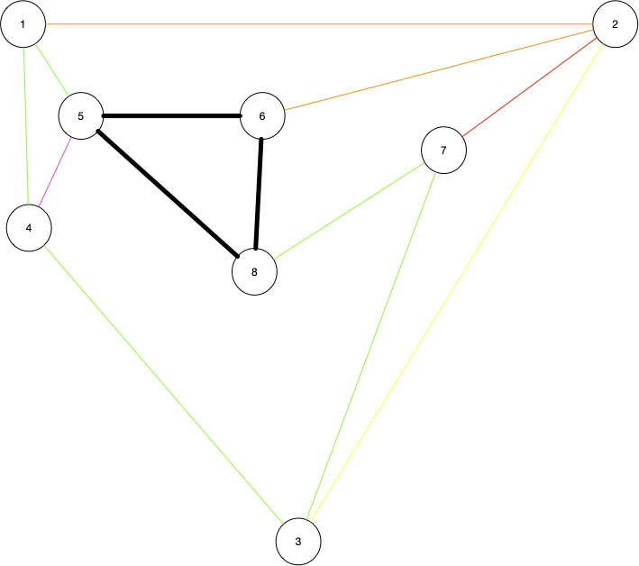
On a commencé par le cycle noir, puis on a ajouté itérativement les chemins : vert, orange, violet, rouge et jaune.
Preuve de la réciproque
Commençons par nous restreindre aux graphes 2-connexes :
Proposition
Si $G$ est planaire si et seulement si ses composantes 2-connexes le sont.
preuve
preuve
Si le graphe est planaire toute restriction de celui-ci l'est : $G$ planaire implique que ses composantes 2-connexes le soient.
Réciproquement on procède par récurrence sur le nombre de ses composantes 2-connexes. S'il y en a une c'est évident et s'il y en a plus, on peut décomposer le graphe en 2 :
- un graphe qui est la restriction de $G$ à une composantes qui est une feuille dans l'arbre des composantes 2-connexes,
- un graphe qui est la restriction de $G$ à toutes les autres composantes
Ces deux graphes sont planaires par hypothèse de récurrence et on un unique sommet en commun. On peut les recoller en un seul graphe planaire via celui-ci puisque l'on peut s'arranger pour qu'il soit sur la face infinie d'un des deux graphes et l'insérer dans une des faces le contenant dans l'autre.
Nous allons prouver la réciproque par l'absurde en cherchant un graphe non planaire n'ayant ni $K_5$ ni $K_{3, 3}$ comme mineurs. On suppose qu'il en existe et on en considère un, disons $G^\star$ avec :
- le nombre minimum de sommets : si on supprime un sommet de $G^\star$ il devient planaire
- parmi tous ceux ayant un nombre minimum de sommets, notre graphe à un nombre minimum d'arêtes : si on supprime une arête de $G^\star$ il devient planaire
La proposition précédente nous montre alors que $G^\star$ est 2-connexe sinon il existerait une de ses composante 2-connexe non planaire et contredirait sa minimalité en nombre de sommets. De plus, tout sommet de $G^\star$ est de degré au moins 3 puisque :
- $G^\star$ est 2-connexe il ne peut donc avoir aucun sommet de degré 1 (supprimer son voisin déconnecterait le graphe),
- s'il existait un sommet de degré 2 on pourrait fusionner ses 2 arêtes et le graphe serait encore non planaire (et contredirait sa minimalité en nombre de sommets)
De là, toute décomposition en oreilles de $G^\star$ va contenir au moins un chemin dont on pourra supprimer une arête, disons $uv$ sans perdre la 2-connectivité du graphe. En revanche le graphe résultant $G^\star - uv$ sera planaire.
Comme $G^\star - uv$ est 2-connexe il existe des cycles élémentaires contenant $u$ et $v$. Notons $\mathcal{C}$ cet ensemble. Pour toute représentation planaire $P$ de $G^\star - uv$ on peut compter pour chaque cycle $C$ de $\mathcal{C}$ le nombre $N_P(C)$ de faces qu'il contient et on note $N(P) = \max(\{N_P(C) \mid C \in \mathcal{C}\})$. On choisi alors une représentation planaire $P^\star$ de $G^\star - uv$ qui réalise le maximum de $N(P)$ pour toutes les représentations planaires de $G^\star - uv$ et $C^\star$ un cycle de $\mathcal{C}$ tel que $N_{P^\star}(C^\star) = N(P^\star)$.
Le choix de $G^\star - uv$, $P^\star$ et de $C^\star$ implique plusieurs choses. Premièrement $u$ et $v$ ne sont pas voisins dans $C^\star$ (l'arête $uv$ n'est pas dans le graphe). De là, il n'existe pas d'oreille de $C^\star$ dont les 2 sommets d'accroche sont entre $u$ et $v$ et le chemin à l'extérieur de $C^\star$ :
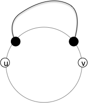
Car il existerait un cycle (le cycle rouge) qui aurait au moins une région de plus que $C^\star$ ce qui est impossible :
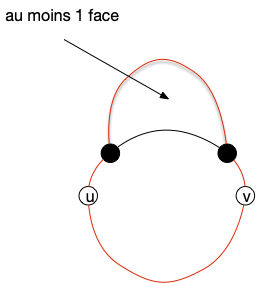
On ne peut pas non plus ajouter l'arête $uv$ à $P^\star$ sans le rendre non planaire. Il existe donc deux oreilles reliant un arc entre $u$ et $v$ à l'autre, l'un interne (qui empêche de relier $u$ et $v$ par l'intérieur) l'autre externe (qui empêche de relier $u$ et $v$ par l'extérieur):
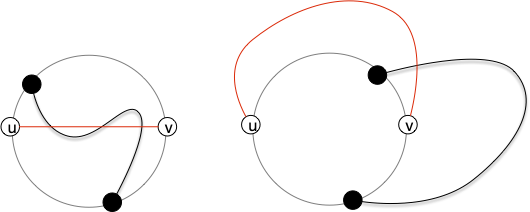
Examinons les différents cas possible. Tout d'abord pour que l'oreille extérieur ne soit pas d'un côté du cycle, il faut que ses accroches soient différentes de $u$ et $v$ :
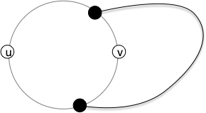
Pour l'oreille interne, regarde ses accroches. Si elles sont différentes de celles de l'oreille interne on est dans le cas suivant :
, pour qu'il soit impossible de faire coller l'oreille interne à l'oreille extérieur sans casser la planarité :
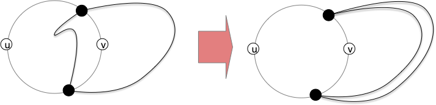
Il faut qu'on ne puisse pas la faire sortir, ce qui impose de l'attacher de :

- si seule était égales, comme il n'existe pas d'oreille reliant deux même côté du cycle on pourrait également faire passer l'oreille interne à extérieur sans casser la planarité :
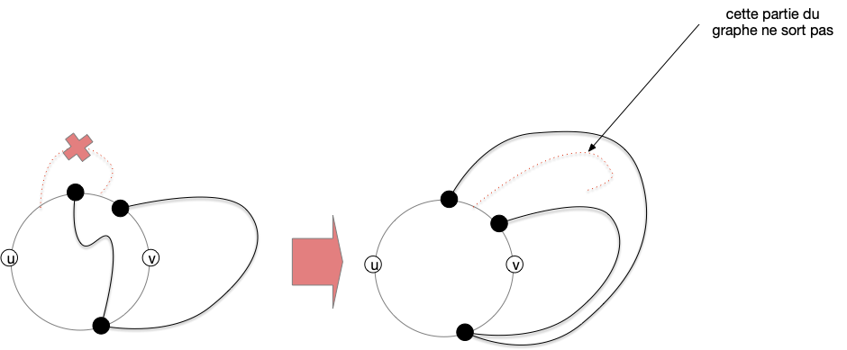
Si les 2 oreilles sont disjointes intérieurement on forcément dans le cas où les extrémités égale;ent sont